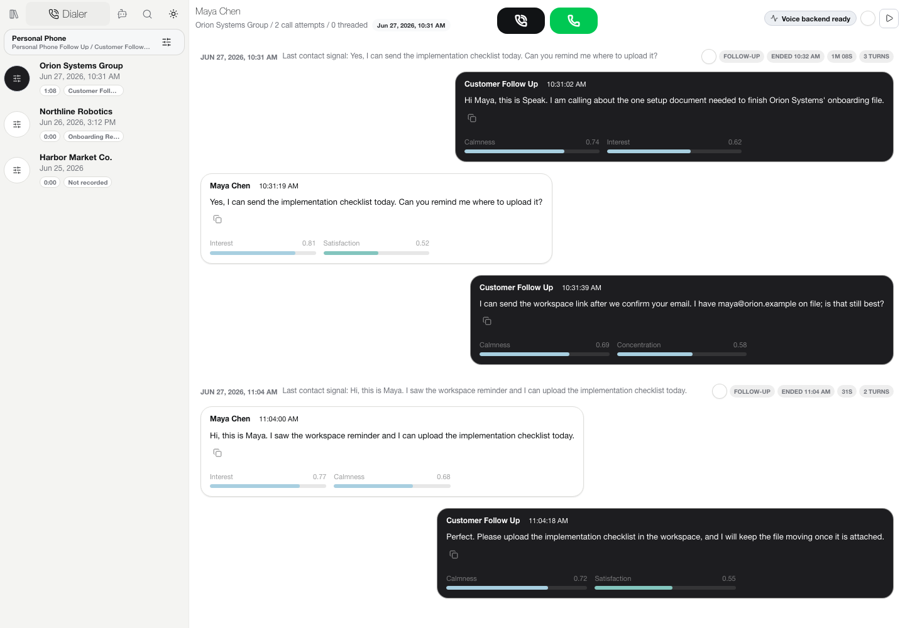

Prepare
Contacts, profiles, context, recordings, and communication history.
Speak combines contact context, realtime transcripts, human supervision, agent configuration, communication history, and proof-backed actions in one workspace.

Prepare the work, run the call, and tune the agent without scattering state across separate tools.
Contacts, profiles, context, recordings, and communication history.
Queue state, live transcript, guidance, playback, takeover, and action proof.
Prompts, voices, provider settings, browser tests, and phone-quality tests.
The UI, agent integrations, and widgets share the same backend actions and proof rules. Provider-specific behavior stays behind adapters.
React / TypeScript UI
│
▼
Express API + shared action contract
┌────┼──────────┬───────────┐
▼ ▼ ▼ ▼
voice phone workspace agent/UI
providers state adaptersSpeak supports multiple voice runtimes and phone transports while keeping operator behavior consistent.
This site is the public overview. The repository contains the source, local setup, technical references, and contribution guide.